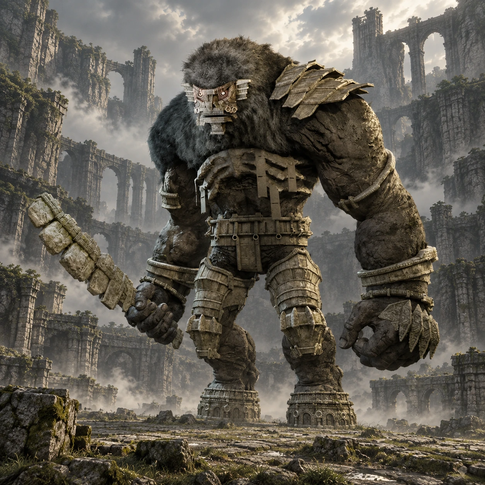

Dois nomes, duas origens
“Minotaur_C” é um nome de desenvolvimento. “Argus” é o nome popular entre os fãs, não um nome próprio apresentado durante o jogo.

Colosso 15 · Terras Proibidas
Um sentinela entre pontes partidas.
Argus ocupa uma fortaleza estreita à beira de um precipício. A arma de pedra e o passo pesado obrigam Wander a buscar caminhos pelas próprias ruínas.
Conheça o gigante01 / O gigante
Braços fortes, ombros largos e uma grande arma definem o perfil de Argus. A pedra forma proteções ao redor do corpo, alternando superfícies rígidas e áreas de pelo.
As galerias laterais aproximam o colosso da arquitetura. Visto entre os pilares, ele parece alto o bastante para ocupar vários andares de uma só vez.
*A medida indicada segue o guia Vandal, citado nas fontes. Os tamanhos variam entre fontes e escalas; esta é uma referência aproximada de altura, não uma medida oficial confirmada.
02 / O caminho
Siga para o extremo nordeste, passando a leste da região de Celosia. Procure o grande templo em ruínas junto às montanhas.
Continue a pé pelas escadas e pelos trechos quebrados até a área aberta e comprida. O precipício no final marca o local da chegada de Argus.
Abrir mapa das Terras Proibidas03 / Um olhar mais atento
“Minotaur_C” é um nome de desenvolvimento. “Argus” é o nome popular entre os fãs, não um nome próprio apresentado durante o jogo.
Minotaur_C completa a sequência de nomes de desenvolvimento que inclui Valus e Barba.
Torres, arcos e muralhas compõem a entrada da arena. A areia ao redor reforça a aparência de um lugar abandonado.
04 / O encontro
Algumas pistas para começar, deixando a descoberta da luta com você.
Dicas gerais para o modo Normal. A ficha não detalha todos os pontos vitais nem o desfecho do confronto.
Ficha baseada em registros da comunidade e guias de jogo. A arte é uma interpretação visual, não uma captura do jogo.